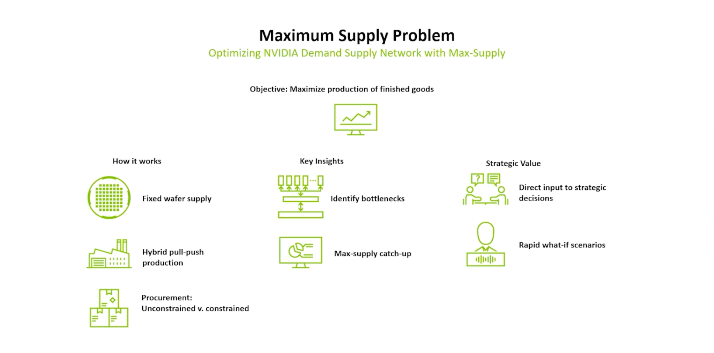
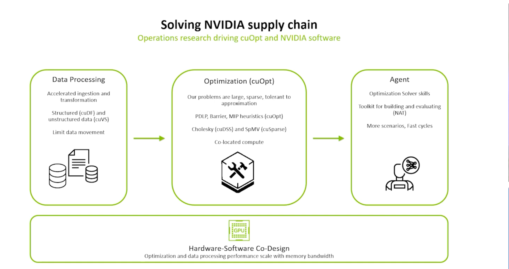
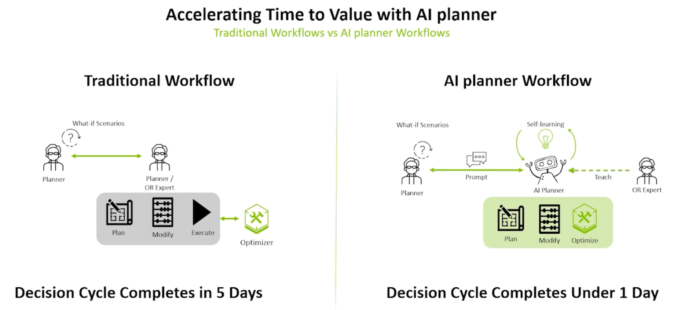
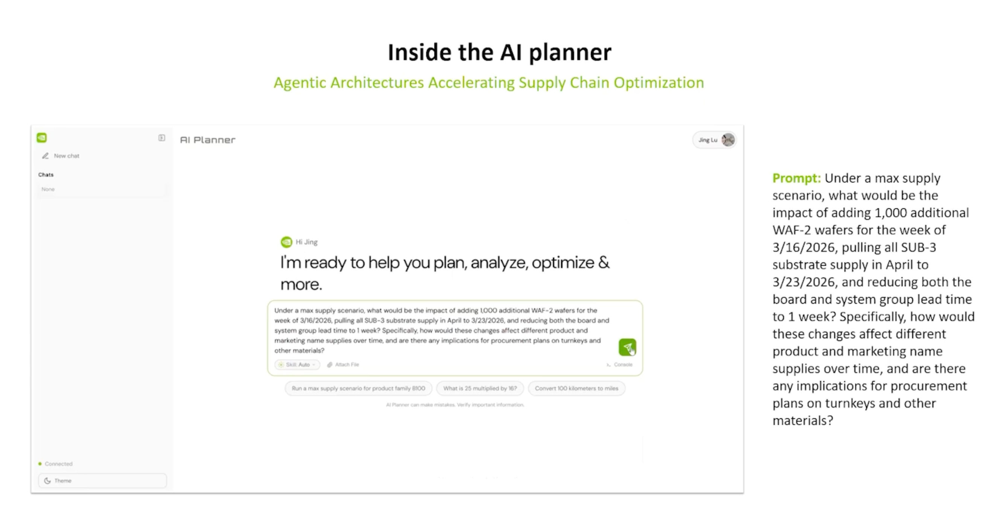
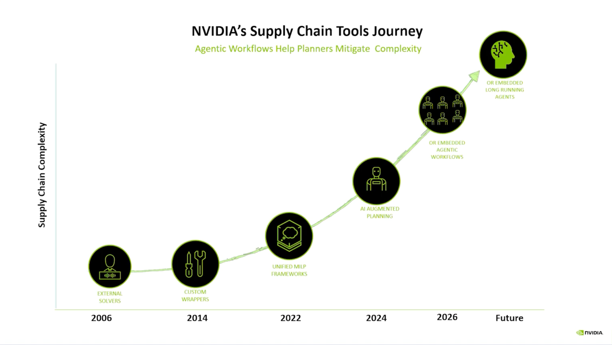

英伟达AI供应链优化系统
基于2026年Edelman奖答辩演讲 — OR+AI驱动的AI Planner深度解析
💡 一句话总结
过去OR模型需要算法专家团队才能调整使用，业务用户难以直接操作。未来，企业决策系统的竞争力不仅在于算法的先进，更在于如何将专家智慧规模化、智能化地赋能给每一个决策者。
一、背景与挑战：从芯片到AI工厂的跨越
- 供应链复杂度爆炸：英伟达已不仅是游戏显卡制造商，而是全球AI基础设施（AI工厂/数据中心）的构建者。其复杂的全球制造网络横跨三大洲，需要管理数十个工厂、数百家合作伙伴、数千种零部件（包括GPU、交换机、网卡、电缆等），以组装近3,000种不同的产品。
- 规模创历史之最：以Grace Blackwell NVLink 72系统为例，单台系统就包含超过100万个零部件。数据中心建设规模堪比"阿波罗计划"，任何一处供应链中断都会造成巨大损失。
- 传统系统失效：传统的遗留规划系统和电子表格已无法处理如此庞大的数据和动态多变的约束条件。英伟达面临着需求每周都在变，但部分物料需要提前数月采购的时间差挑战。

▲ 英伟达供应链面临的核心挑战：复杂度、规模与响应速度的三重压力
二、核心破局：GPU加速运筹学（OR）
为了突破计算瓶颈，英伟达做出了一个坚定的选择：将整个决策管线完全移至GPU上运行。
- 全管线加速（Co-op）：不仅是核心算法，英伟达消除了包括数据提取、矩阵构建、预处理等全流程的延迟。
- 算法创新：采用适用于GPU并行计算的PDLP（一阶线性规划方法），并重写了稀疏矩阵向量乘法（SPMV）；对于不适合一阶方法的模型，构建了确定性的Cholesky分解法；在混合整数规划（MIP）方面，构建了专注于原始启发式算法（Primal Heuristics）的GPU原生求解器。
- 硬件级软硬协同：将线性规划（LP）纳入新芯片量产前的性能基准测试中。通过增加内存带宽，新一代GPU能直接倍增求解速度。

▲ GPU加速运筹学：全管线从CPU迁移至GPU，实现软硬协同加速
三、终极答案：AI Planner的四大智能体架构
尽管运筹学（OR）数学模型极其强大，但往往存在"可用性悖论（Usability Paradox）"——业务规划师在使用时通常需要一个由运筹学科学家组成的"专家团"在现场重构和调整模型，耗时耗力。
为此，英伟达开发了AI Planner，通过大语言模型（LLM）的推理能力与底层严谨的运筹学知识库（Skills Layer）相结合，建立了一个由四个专业智能体（Agent）协同工作的架构，将专家知识直接赋予每一位普通规划师。

▲ AI Planner整体架构：四大智能体协同工作的智能体工作流

▲ AI Planner带来的显著业务成果：6倍生产力提升、83%延迟订单减少
1. Manager Agent（指挥中心）
负责理解用户（规划师）输入的自然语言问题，捕捉复杂意图，将其拆分为具体的子任务。
2. Modeler Agent（翻译官）
将业务语言和多变的供应链规则（如多级物料清单BOM、动态良率、替代料等）转化为严谨的运筹学数学模型与参数配置。
💡 ai生成建模语言的应用场景之一
3. Coder Agent（执行者）
作为专业的"结对程序员"，自动编写代码并调用GPU加速求解引擎，在隔离的安全沙盒（Sandbox）中高效执行大量的数据映射、仿真和优化运算。
4. Interpreter Agent（解说员）
打破"黑盒模型"，将底层的数学运算结果和复杂的敏感性分析，转化为人类易懂的上下文分析报告，解释"为什么"会产生这样的计划，并给出防御性决策建议。

▲ AI Planner实际运行示例：What-if场景实时模拟与结果解读
四、显著的业务成果与价值
这套"OR+AI"系统自2024年起已在统一供应链优化、交付排序和承诺规划三大系统中上线投入生产。其带来的量化价值包括：
- 效率与生产力革命：规划师的综合工作生产力提升了6倍。原本需要跨团队、跨系统手工对接耗时15小时的单板与系统规划周期，被缩短到了15分钟（整个核心规划周期从5天压缩到1天）。
- 响应速度（What-if场景模拟）：规划师或管理层可以在会议中实时进行高频的低风险"What-if"场景做实验（例如：突然多出服务器机架物料时，几分钟内便可对比出基线与调整后的最优排产差异，并追溯每一步计算路径）。
- 业务可靠性提升：由于实现了连续、高精度的优化决策，承诺交付的稳定性大幅提升，延迟交付的订单数量减少了83%。
- 解耦业务增长与人力：成功将公司业绩的指数级增长与运营团队的人数脱钩。即使在制造最复杂的AI超级计算机阶段，规划团队的人数也仅需翻倍即轻松支撑了前所未有的庞大业务量。
五、总结与未来愿景
英伟达强调，AI Planner不仅自动化了数学计算，更在全公司范围内放大了人类专家的智慧。运筹学科学家将知识沉淀为可被智能体调用的"Skills（技能）"，规划师则可随时随地按需执行战略。
这种"由深度行业专家知识背书、全天候在线、无缝对接底层高效求解器"的智能体工作流（Agentic Workflows）模式，正是英伟达认为计划体制的终极答案。未来，这种OR+AI的架构模式还将推广至排程、财务规划、资源分配等更广泛的决策领域。

▲ 从GPU加速OR到AI Planner的迭代演进路径，以及面向未来的扩展方向